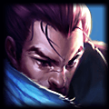
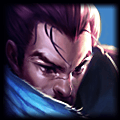

Gustavin - Amumu da vida real :'(

Gustavo esqueceu da verdadeira origem quando ficou rico, por isso, comprou um PC gamer e se dedicou inteirinamente à vida de Proplayer do prata no LOL. Enquanto fazia isso, conheceu uma trupe de loucos que um dia se tornariam seus companheiros de time na line-up dos GG(Galados Galantes). Gustavo é o player do Schrodinger: Feeda e não feeda ao mesmo tempo.
Gustavin joga fácil de:
 
